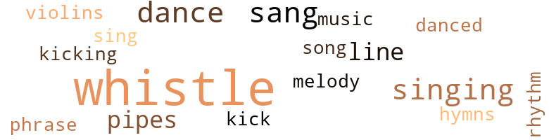
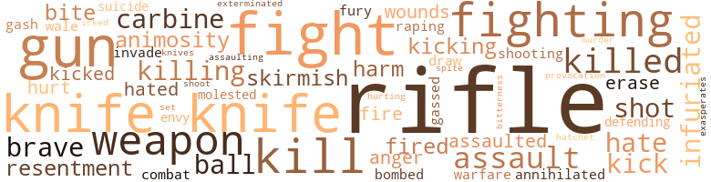
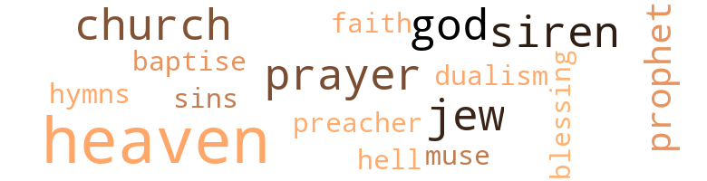

No Need to Cry, by Kirk, Paul S. (1967)
39 music-related terms matched in this text.
Most frequent terms in this topic: whistle (14); sang (3); singing (3); dance (3); line (2)
dance.n.01
Definition: an artistic form of nonverbal communication
| word | sentence |
|---|---|
| dance | At the officers club on the outskirts of Salisbury , officers from the Allied Armies had come together in a gay mood for the spring dance . |
| dance | Morgan , while reluctantly doing an errand for his mother , chanced upon Raymond , his very close friend , who boasted that he had acquired money enough to take his girlfriend to the teenage dance . |
dance.v.03
Definition: skip, leap, or move up and down or sideways
| word | sentence |
|---|---|
| danced | She squealed and danced on his stomach as if it was a Christmas toy . |
| dance | A laughing sun covered Camp Ellis with a hazy veil of strident heat ; and all that moved through it seemed to lazily dance along , slow-quivering , as if they were lost to their earthy origin and were tremulous , but trying to brave another world . |
hymn.n.01
Definition: a song of praise (to God or to a saint or to a nation)
| word | sentence |
|---|---|
| hymns | Others lay restlessly brooding over their plight , while others sang hymns and prayed so as to forget the whole thing at least for the night . |
kick.v.04
Definition: kick a leg up
| word | sentence |
|---|---|
| kicking | To prevent him from kicking me , I grabbed his foot and he fell to the ground . |
| kick | " What did he expect me ... " " Stand up and let him kick you , " Beal laughed with an air of sarcasm . |
music.n.01
Definition: an artistic form of auditory communication incorporating instrumental or vocal tones in a structured and continuous manner
| word | sentence |
|---|---|
| music | It was hot-aired , like the wind across the desert his music had sketched so amorously . |
phrase.n.02
Definition: a short musical passage
| word | sentence |
|---|---|
| phrase | At the door of the Queen Mary stood a second lieutenant repeating the phrase grimly : " Step lively and follow the man in front of you . " |
pipe.n.04
Definition: a tubular wind instrument
| word | sentence |
|---|---|
| pipes | He saw smoke oozing out of the tail pipes . |
| pipes | They coasted around curves and the hollow sound of the exhaust pipes interfered with the peacefulness of the countryside . |
rhythm.n.04
Definition: the arrangement of spoken words alternating stressed and unstressed elements
| word | sentence |
|---|---|
| rhythm | They were so infatuated with the drilling that the rhythm of picking up their feer and putting them down , became so pronounced , that it was equivalent to counting cadence . |
sing.v.02
Definition: produce tones with the voice
| word | sentence |
|---|---|
| sang | Others lay restlessly brooding over their plight , while others sang hymns and prayed so as to forget the whole thing at least for the night . |
| singing | the men would shout in unison , as though they were singing a song . |
| sing | But before I introduce him , I would like to announce that the quartet is here to sing for us . |
| sang | The quartet already immersed in spirit moaned long notes as if they were turning up , and then they softly sang : . |
| sang | The paunchy Hicks sang bass as a member of the quartet . |
singing.n.01
Definition: the act of singing vocal music
| word | sentence |
|---|---|
| singing | Junior was in the bathtub singing nursery rhymes ; Diana sat before the mirror fixing her hair ; Raymond searched the house over looking for one of his socks , while George vacuumed the living room carpet . |
| singing | Counting and singing of cadence echoed throughout the camp area . |
song.n.01
Definition: a short musical composition with words
| word | sentence |
|---|---|
| song | the men would shout in unison , as though they were singing a song . |
tune.n.01
Definition: a succession of notes forming a distinctive sequence
| word | sentence |
|---|---|
| line | After a brief conference with the military police , Lieutenant McCannus ordered his drivers to get their trucks on the ready line ( an area marked off for vehicles that can be moved off or out at an instance ) . |
| line | All tables were occupied but a line of people against the wall moved slowly but persistently . |
| melody | His dramatic gestures and his artistic voice not only produced sweet melody , but to watch him was inspirational . |
violin.n.01
Definition: bowed stringed instrument that is the highest member of the violin family; this instrument has four strings and a hollow body and an unfretted fingerboard and is played with a bow
| word | sentence |
|---|---|
| violins | Suddenly bullets from machine guns and eighty-eight millimeters whined like violins in a symphony orchestra , playing " Nearer my God to Thee . " |
whistle.n.01
Definition: the sound made by something moving rapidly or by steam coming out of a small aperture
| word | sentence |
|---|---|
| whistles | The whistles were not blowing . |
whistle.v.01
Definition: make whistling sounds
| word | sentence |
|---|---|
| whistle | If you should hear a train whistle blow or a plane overhead , take cover . |
| whistle | Beal blew his whistle to summon his men to reveille , where he saw those late arrivals swarming through open field , like chickens coming home to roost . |
| whistle | He entered the door blowing a whistle . |
| whistle | He blew the whistle so loud that after he stopped blowing it , you could still hear it ringing in your ears . |
| whistle | The whistle blew with a lonely sound , like it was desperately pulling upgrade , and if it gave out on steam , it would go tearing back downgrade . |
| whistle | Anyway , the whistle blew and blew . |
| whistle | Five minutes later , he walked through a second time blowing his whistle . |
| whistle | At fifteen minutes to five , he would blow his first whistle and at ten minutes to five , he would blow his final whistle and men would come storming out of their barracks , as though a fire had broken out . |
| whistle | At fifteen minutes to five , he would blow his first whistle and at ten minutes to five , he would blow his final whistle and men would come storming out of their barracks , as though a fire had broken out . |
| whistle | When Beal blew his final whistle , they too would hurry to make reveille and stand at the head of their respective platoons . |
| whistle | He stuck the whistle in his mouth and blew it long and loud . |
| whistle | A string was attached to it around his neck , the whistle dangled around at his stomach . |
| whistle | After five minutes , he blew his final whistle . |
| whistle | He had dozed off to sleep again and had only heard the final whistle . |
194 violence-related terms matched in this text.
Most frequent terms in this topic: rifle (28); knife (17); fight (11); rifles (10); fighting (8)
aggravation.n.02
Definition: unfriendly behavior that causes anger or resentment
| word | sentence |
|---|---|
| provocation | They attacked me without warning and without provocation . " |
anger.n.01
Definition: a strong emotion; a feeling that is oriented toward some real or supposed grievance
| word | sentence |
|---|---|
| anger | His had hardened with anger . |
| anger | He was suddenly conscious that he was trembling violently with anger . |
animosity.n.01
Definition: a feeling of ill will arousing active hostility
| word | sentence |
|---|---|
| animosity | George continued : " I do n't doubt for one moment that there are white men in the army , and in high places , " he seemed to underscore , " who would risk losing the war to maintain racial animosity . |
| animosity | He said with a strong note of animosity in his voice . |
assail.v.01
Definition: attack someone physically or emotionally
| word | sentence |
|---|---|
| assaulting | In the complaint , he accused Corporal George Johnson and Private Peter Black of assaulting him and demanded that George be court-martialed and Blank be court-martialed under the fifth article of war . |
| assaulted | " This is to certify that I , Lieutenant Marvin Roberts , a second lieutenant in the United States Army , was on this Thursday afternoon assaulted and roughed up while performing my duty by Corporal George Johnson and Private Peter Black . |
| assaulted | Capt. McCannus had beyond all reasonable question of doubt reached a compromise with the colonel to move out of the Plymouth area since there was insufficient evidence that two enlisted men had teamed up and assaulted an officer . |
bombard.v.02
Definition: throw bombs at or attack with bombs
| word | sentence |
|---|---|
| bombed | They looked with skepticism at the Raglan barracks where they were to live and wondered how it was that Raglan had not been bombed . |
brush.n.06
Definition: a minor short-term fight
| word | sentence |
|---|---|
| skirmish | Let George thro hie white ass in der lake , " Peter Black had come over near the skirmish when Philip More had intervened . |
| skirmish | He could conceive of Clack being involved in such an incident but it was difficult for him to depict George in such a skirmish . |
carbine.n.01
Definition: light automatic rifle
| word | sentence |
|---|---|
| carbine | He carried his carbine rifle at port arm . |
| carbine | " Halt , " he yelled a second time and nervously cocked his carbine rifle . |
| carbine | " Look out Mr. Hitler , here we come , " George moved out briskly with his carbine at port arm . |
cut.n.05
Definition: a wound made by cutting
| word | sentence |
|---|---|
| gash | A deep gash was under her eye where she had evidently struck her head against the corner of the table when site fell . |
draw.v.23
Definition: pull (a person) apart with four horses tied to his extremities, so as to execute him
| word | sentence |
|---|---|
| draw | " I would like to draw my pay down for the month . " |
eliminate.v.03
Definition: kill in large numbers
| word | sentence |
|---|---|
| annihilated | Hence , they conclude , that the minority races must be annihilated to provide living space for the master race . |
envy.n.01
Definition: a feeling of grudging admiration and desire to have something that is possessed by another
| word | sentence |
|---|---|
| envy | He stared at the movement of small and large tanks with an eye of envy . |
erase.v.01
Definition: remove from memory or existence
| word | sentence |
|---|---|
| erase | Pausing , he continued , " We ... have a black mark on us , " he said timidly and haltingly , " We have to live it down in order to erase it from our record . " |
| erase | But for the sake of a hundred and fifty men , I suggest that you court-martial me so that these men might have a clear record , if that will erase a black mark , " he concluded with an air of sarcasm . |
exterminate.v.01
Definition: kill en masse; kill on a large scale; kill many
| word | sentence |
|---|---|
| exterminated | Like rookie baseball players , they tested their footing in the suffused sand and exterminated weeds that might hamper their progress . |
fight.n.02
Definition: the act of fighting; any contest or struggle
| word | sentence |
|---|---|
| combat | " You must consider yourselves on the field of battle in actual combat , " he emphasized . |
| fighting | His fighting spirit was unquestionably at a minimum . |
| fighting | I will not stand for any fighting . |
fight.n.05
Definition: a boxing or wrestling match
| word | sentence |
|---|---|
| fight | There was a fight downtown last week between American soldiers and British sailors . |
| fight | If you had been here the fight might have assumed a different character . . . perhaps between whites and blacks . |
| fight | He carried on a wild senseless fight . |
| fight | So whut ah goin ' fight fer , " he said throatily . |
| fights | If it takes that to avoid fights , you just stay away from them . " |
fight.v.02
Definition: fight against or resist strongly
| word | sentence |
|---|---|
| fighting | The thing what we must remember is that we are fighting to save the American flag . |
| fight | " We are being trained to fight a war against the fascists whose theory is that the Germans are the master race and need living space . |
| fight | Unless we are taught how to use these modern weapons too , we 'll be defenseless when it comes to a showdown ; when we are forced to fight to protect ourselves and our white comrades . |
| fighting | " Is this the kind of thing Pm fighting for . . . . ? " |
| fighting | You are free to come when ever you get ready ... a freedom that I 'm fighting for . |
| fighting | " You fellows must understand , " he continued , " that you are fighting a war . |
| defending | In greeting George , the president ordered him to report to his induction center where he would begin training for the purpose of defending his country . |
| fight | She said that she would not have to fight with a little brother like she would a little sister . |
| fight | She threw her head back and held him off with both hands , as though she were being molested and would fight to the bitter end . |
| fight | You would not want that child to grow up with the spector hanging over her head that her daddy was yellow and refused to fight for his country . |
| fighting | More immediately saw that he was fighting a lost cause . |
| fight | " Nobody loves to fight , Black . |
| fight | " Ef somebody break in meh house , ef ah could , ah 'd fight em offen meh . |
| fighting | If you have any fighting to do , let me do it for you . |
fury.n.01
Definition: a feeling of intense anger
| word | sentence |
|---|---|
| fury | She raised her voice in a fury . |
gall.v.02
Definition: irritate or vex
| word | sentence |
|---|---|
| irked | And to entertain the idea of his having to drive the officers to a ball , not only irked him , but made him feel the size of a toothpick . |
gas.v.01
Definition: attack with gas; subject to gas fumes
| word | sentence |
|---|---|
| gassed | Having gassed the trucks , checked the oil and tires ; the drivers drove across the spacious yard to the north-east corner where the trucks were parked . |
gun.n.01
Definition: a weapon that discharges a missile at high velocity (especially from a metal tube or barrel)
| word | sentence |
|---|---|
| gun | With the barrel of the gun between his point finger and his thumb , he held his breath and looked down the sight of the rifle with one eye . |
| gun | Occasionally , an anti-air craft gun would sound off but that away up near London . |
| guns | They heard bombs fall on London ; they heard the British anti-air craft guns ; they saw flares light up all around them and occasionally heard a German Luftwaffe swerving to the ground in flames . |
| guns | The tranquility of the spring morning was broken by occasional sounds of anti-aircraft guns . |
| guns | He could still hear rumbling in the air and anti-aircraft guns but not nearly as persistent as it had been during the night . |
| guns | " Those are our navy guns , " the navy man replied . |
| guns | Out in the channel , flames spurted out of the dark , full-throated naval guns roared across the water and echoed against rocks where the men stood . |
| guns | He was unconscious of the distant roaring of naval guns and endless blast of aircraft . |
| guns | Suddenly bullets from machine guns and eighty-eight millimeters whined like violins in a symphony orchestra , playing " Nearer my God to Thee . " |
| gun | There was moderate machine gun fire . |
| gun | " I know my child does not carry a knife and he does n't have a gun , " she insisted , and I do n't want anybody to try and pin something on him , " she said implacably . |
hate.v.01
Definition: dislike intensely; feel antipathy or aversion towards
| word | sentence |
|---|---|
| hate | There 's a nice looking place across the street there but I hate to take you in there and they refuse to serve you . " |
| hate | But I would hate like hell to face such an enemy with men whose morale is sinking like a torpedoed ship ; whose officers are indecisive and afraid to go to bat for their men . |
| hated | He hated to be constantly reminded of his hopeless dilemma . |
| hated | He passed the barracks where the men were sleeping and was tempted to go in , but he hated to . |
| hate | I would hate to take such measures , but if I find that I ca n't get you out otherwise , I 'll resort to a method that will get you out on time . " |
hurt.v.04
Definition: cause damage or affect negatively
| word | sentence |
|---|---|
| hurting | " When did your back start hurting you ? " the doctor stared at Black with an airof skepticism . |
infuriate.v.01
Definition: make furious
| word | sentence |
|---|---|
| infuriated | He looked like an infuriated beast . |
| infuriated | " f want to make it clear , " the Captain said with restraint , but obviously infuriated , " until George Johnson and Peter Black prove to us that they did not team up and assault Lieutenant Roberts , we have no alternative except to act on the basis of the document . " |
| infuriated | He complains that Peter Black had deliberately attempted to run over him , that George Johnson was insulting to the point that it infuriated him . |
| exasperates | The only thing that exasperates the hell out of me is that I told you that something like this would happen . |
injury.n.01
Definition: any physical damage to the body caused by violence or accident or fracture etc.
| word | sentence |
|---|---|
| harm | " Even if he does n't , it 's no harm to be nice and clean , " George reflected . |
| harm | It would do more harm than good to try to dress the wounds . |
| hurt | " Ya aint hurt er bit , " More looked George over as best he could . |
invade.v.01
Definition: march aggressively into another's territory by military force for the purposes of conquest and occupation
| word | sentence |
|---|---|
| invade | " And that gives you the right to invade a private residence ? " |
kick.v.04
Definition: kick a leg up
| word | sentence |
|---|---|
| kicking | To prevent him from kicking me , I grabbed his foot and he fell to the ground . |
| kick | " What did he expect me ... " " Stand up and let him kick you , " Beal laughed with an air of sarcasm . |
kick_back.v.02
Definition: spring back, as from a forceful thrust
| word | sentence |
|---|---|
| kicking | She lay quietly in her cradle , kicking up her little feet , as though she , too , had had a restless night . |
| kick | " I ought to kick your black ass , " the officer growled . |
| kick | When I refused to yield , he attempted to kick me in the rear . |
| kicked | I must say that I 'm glad the officer kicked at me instead of Black , because Black can be very vicious when he is imposed upon . " |
| kicked | That when he kicked at George , " he admits , " he was thrown to the ground . |
kill.v.10
Definition: cause the death of, without intention
| word | sentence |
|---|---|
| killing | He limped terribly , as though his feet were killing him . |
| kill | Ah started ter tak a dead aim an shoot ter kill 'em but ah figger long as ah kin scare'en away , wuz n't necess ' ry ter kill ' en . " |
| kill | Ah started ter tak a dead aim an shoot ter kill 'em but ah figger long as ah kin scare'en away , wuz n't necess ' ry ter kill ' en . " |
| killed | George recalled , " The girl whose husband got killed in the Sicily invasion . " |
| kill | " If you do n't get outta the way I 'll kill you . " |
| killed | the child insisted , " most of your men would have been killed , if not all of them . |
| killing | " We have the job of crossing the channel , killing and driving the Fascist 's troops back to Berlin . |
| killed | " Do you think you 're going to ket killed ? " |
| kill | " The Bible says thou shalt not kill too . " |
| killed | For surely , if the enemy had seen him he would have been killed already , he thought . |
| kill | Der Germans doan wan na kill jus one man , dey wan na heap ' opms . |
| kill | You resent welfare aid . . . " " Before I 'd see those three children on welfare , I 'd kill you , them and then myself , " he said ominously . |
| killed | They lay me up on a little old kitchen table , daddy , and almost killed me . |
| kill | There is a little coffee ; I should be able to concoct enough food to kill hunger . " |
| killing | He was killing time . |
| kill | They are to kill with . |
knife.n.02
Definition: a weapon with a handle and blade with a sharp point
| word | sentence |
|---|---|
| knife | " Listen , nigger , I 'm gon na make you use that knife , " Gibson grabbed his rifle and drew the butt end of it on Black . |
| knife | " We took a knife and twenty dollars off him . " |
| knife | More took his knife to cut the shirt off him . |
| knife | " I know my child does not carry a knife and he does n't have a gun , " she insisted , and I do n't want anybody to try and pin something on him , " she said implacably . |
| knife | But Morgan put his knife at her neck and told me to search her purse . " |
| knife | " Well how would you like for someone to put a knife at my neck and take my money ? |
| knife | " Give me your purse , " Morgan shouted , " this is a stick up , " he held a boys scout knife in his hand . |
| knife | " I said gimmie that purse , " he opened his knife and held it to her throat . |
| knife | Morgan ignoring her plea , snatched the purse from her lap and handed it to Raymond with one hand while he held the knife around the lady 's throat with the other . " |
| knife | " Where is your knife ? " the cops patted him down . |
| knife | " I ai n't got no knife , " he whined babyishly . |
| knife | " How would you like for someone to put a knife around your mother 's throat and take her money ? " |
| knife | " But I never had a knife , " Raymond told the judge . |
| knife | " What did you need with a knife when your partner had one . |
| knives | It would n't take two knives to cut one little woman 's throat would it ? " |
| knife | Bull ef ya call meh er nigger , ya gon na fin ' out sumpin bout inch , 'cause ah gotter kut ya , " Black walked over toward the soldier with his knife open . |
| knife | " Nigger , I ought to get up from here and make you eat that knife , " a third soldier said , as Black passed his bunk . |
| knife | Black closed his knife . |
malice.n.01
Definition: feeling a need to see others suffer
| word | sentence |
|---|---|
| spite | A man can lead and command respect from men in spite of their childishness ; their obstinacy and their lack of experience . |
molest.v.01
Definition: harass or assault sexually; make indecent advances to
| word | sentence |
|---|---|
| molested | She threw her head back and held him off with both hands , as though she were being molested and would fight to the bitter end . |
murder.n.01
Definition: unlawful premeditated killing of a human being by a human being
| word | sentence |
|---|---|
| murder | " If you do n't get to your room and pull those dirty clothes off I 'll murder you , boy , " Josephine raised her voice with each word . |
musket_ball.n.01
Definition: a solid projectile that is shot by a musket
| word | sentence |
|---|---|
| balls | " It all looks good , " With meat balls and spaghetti on their platters they were looking around for a table . |
| ball | And to entertain the idea of his having to drive the officers to a ball , not only irked him , but made him feel the size of a toothpick . |
| balls | All his efforts to move out seemed to fade away , like snow balls in a hot frying pan . |
open_fire.v.01
Definition: start firing a weapon
| word | sentence |
|---|---|
| Fires | " Fires are dangerous , they give away your position to the enemy , " he explained . |
| fired | He aimed his rifle directly down in front of him and fired five times into the earth . |
| fire | They too had waited for a signal to open fire . |
| fired | You forgot that you represented the first to be fired and the last to be hired regardless of your background . |
pain.v.02
Definition: cause emotional anguish or make miserable
| word | sentence |
|---|---|
| hurt | " It seems to hurt you so much when you move . " |
rape.n.03
Definition: the crime of forcing a woman to submit to sexual intercourse against her will
| word | sentence |
|---|---|
| assault | It gave the impression that the two enlisted men had teamed up to assault the officer and threatened to toss him into the lake ; that only the timely intervention of Pfc. Philip More , had beyond all reasonable question of a doubt saved his life . |
| assault | " f want to make it clear , " the Captain said with restraint , but obviously infuriated , " until George Johnson and Peter Black prove to us that they did not team up and assault Lieutenant Roberts , we have no alternative except to act on the basis of the document . " |
| assault | The assault craft had been lowered into the water and immediately roared away . |
| assault | Planes had joined in the assault and the immense power of the United States Armed Forces had now been let loose at the beaches of southern France . |
rape.v.01
Definition: force (someone) to have sex against their will
| word | sentence |
|---|---|
| raping | He continued , " I do n't want to see one of my men sentenced to die for raping . |
resentment.n.01
Definition: a feeling of deep and bitter anger and ill-will
| word | sentence |
|---|---|
| resentment | They would all express their resentment by sluggish drilling . |
| resentment | But there was not a murmur of resentment . |
| bitterness | An incredible shadow of bitterness gripped his face . |
rifle.n.01
Definition: a shoulder firearm with a long barrel and a rifled bore
| word | sentence |
|---|---|
| rifle | With the barrel of the gun between his point finger and his thumb , he held his breath and looked down the sight of the rifle with one eye . |
| rifle | His head was slightly raised and he braced the butt end of the rifle against his shoulder blade . |
| rifle | With his left hand he steadied the rifle ; he used his point finger on the trigger ; he then held his breath and aimed staring down the barrel with one eye . |
| rifles | As the men lighted cigarettes , they strode over to pick up their rifles that were being guarded by Peter Black . |
| rifle | " Listen , nigger , I 'm gon na make you use that knife , " Gibson grabbed his rifle and drew the butt end of it on Black . |
| rifle | " Corporal Gibson , " George said , " You are a non-commissioned officer and you should be the last one to threaten a man with the butt end of your rifle . |
| rifle | " Does everyone have his rifle ? " the lieutenant resumed his lecture . |
| rifles | " We 'll spend the rest of the afternoon practicing with the rifles the positions that I went through earlier . |
| rifle | He carried his carbine rifle at port arm . |
| rifle | " Halt , " he yelled a second time and nervously cocked his carbine rifle . |
| rifle | " Ah say halt , " he aimed his rifle over his head and shot up in the air . |
| rifle | He aimed his rifle directly down in front of him and fired five times into the earth . |
| rifle | Black had not taken a direct aim ; but then , he had no control over the bullets after they left the barrel of his rifle . |
| rifles | " I do n't know how long you will be gone ; but you take your field packs , your rifles and plenty of K-rations . |
| rifle | George and Macon felt uncomfortable with the heavy rifle belts around their waists and field packs hanging from their sides . |
| rifle | Macon was standing up adjusting his field pack and rifle belt . |
| rifles | " Where is your pass ? " the two MPs charged George with their rifles at port arm . |
| rifles | It 's been very tedious , " George edged off from the MPs who stood holding their rifles at port arms . |
| rifle | " If I knew that I had a company commander who was too yellow and chicken-hearted to go to bat for his men because of their origin ; if I knew there were officers with whom I had to cross the channel with such an attitude , I would make sure that I aimed my rifle at my real enemy once the opportunity presented itself . " |
| rifle | " You will dress in Class A Uniform with rifle belts and a supply of live ammunition . " |
| rifle | The fact that there had been no rifle fire signal did not necessarily mean that Germans were not aware . |
| rifle | But there had been no rifle signal . |
| rifle | Tormented and terrified , in his imagination , he saw the dark muzzle of a rifle which moved noiselessly before him whichever way he tried to turn his head . |
| rifle | The guard walked through the barracks with a grim look on his face , a rifle strapped across his back . |
| rifles | He was to give a lecture on cleanliness and the use of rifles and did not want to give it inside . |
| rifles | Do n't think for one minute that I 'm keeping you here for fear that you might wet ; but rather , I do n't want those rifles to get wet , they might rust on you . |
| rifles | " It will have to do with cleaning your rifles . |
| rifle | To clean your rifle , you must know how to take it apart ; and you must know how to put it back together . |
| rifle | " Now , " the captain paused , " does everyone have a rifle ? |
| rifle | I want you to watch me carefully , " he said holding his rifle above his head . |
| rifle | " I am going to disassemble this rifle , and as I disassemble mine , I want you to disassemble yours . |
| rifles | Having disassembled the rifles , the captain had the students clean each part and oil it . |
| rifles | Resuming his lecture , he said : " I want you to reassemble your rifles and give me the nomenclature of each part as you put it together . " |
| rifle | " This afternoon 's session will deal with the use of the rifle ; aiming at the target . |
| rifle | This morning you learned about the rifle and its component parts . |
| rifle | This afternoon we shall study how to use the rifle and practice aiming at the target . |
| rifle | The rifle is a useful weapon and we ca n't get along without it . |
| rifle | Fie took his rifle and lengthened the strap to fit his arm . |
shoot.v.02
Definition: kill by firing a missile
| word | sentence |
|---|---|
| shot | Ah shot a warnin ' shot inna air but he shot back . |
| shoot | I 'd be afraid that you would shoot me instead of the enemy , " he laughed broadly but seriously . |
| shot | He had been shot through the head and chest . |
| shot | He had been shot through the hip and in the middle of the back . |
shooting.n.02
Definition: killing someone by gunfire
| word | sentence |
|---|---|
| shooting | His men had done a surprisingly good job at bivouac , except for the shooting by Peter Black , and the company had been pointed to as the model of the regiment . |
sic.v.01
Definition: urge to attack someone
| word | sentence |
|---|---|
| set | Their eyes were set on the guard . |
sting.n.03
Definition: a painful wound caused by the thrust of an insect's stinger into skin
| word | sentence |
|---|---|
| bite | Have the men display all their equipment before they eat a bite and make a thorough search for live ammunition , " the Captain ordered . |
| bite | " Mother , " Diana called , who had stretched out on the living room sofa reading a newspaper , " I am going to make some sandwiches and coffee so we can all have a bite to eat . |
suicide.n.01
Definition: the act of killing yourself
| word | sentence |
|---|---|
| suicide | Rumor has it that he committed suicide . |
tomahawk.n.01
Definition: weapon consisting of a fighting ax; used by North American Indians
| word | sentence |
|---|---|
| hatchet | If on the other hand , they were not guilty , they should be given a clean bill and the hatchet should be buried . |
wale.n.01
Definition: a raised mark on the skin (as produced by the blow of a whip); characteristic of many allergic reactions
| word | sentence |
|---|---|
| wale | " Ya wale dhese guys up an dhey 'll throw us outa der ship , " He laughed but it was not a serious one . |
war.n.03
Definition: an active struggle between competing entities
| word | sentence |
|---|---|
| warfare | " For example , " George cut in , " the white soldier is being taught how to use the most complicated weapons of modern warfare . |
weapon.n.01
Definition: any instrument or instrumentality used in fighting or hunting
| word | sentence |
|---|---|
| weapons | " Put those weapons down , both of you . |
| weapons | " For example , " George cut in , " the white soldier is being taught how to use the most complicated weapons of modern warfare . |
| weapons | Unless we are taught how to use these modern weapons too , we 'll be defenseless when it comes to a showdown ; when we are forced to fight to protect ourselves and our white comrades . |
| weapon | " Did he have any weapon of any kind on him ? " |
| weapons | Men huddled against each other at the sides of the craft , protecting themselves and their weapons from the water that splashed all about them . |
| weapons | They knew how to drive trucks and use the weapons on land . |
| weapon | The rifle is a useful weapon and we ca n't get along without it . |
| weapon | Therefore , it is a weapon that must become a part of you . |
weather.v.01
Definition: face and withstand with courage
| word | sentence |
|---|---|
| brave | But the captain tried to depict himself as a relaxed and brave individual . |
| brave | Now he was brave and determined . |
| brave | A laughing sun covered Camp Ellis with a hazy veil of strident heat ; and all that moved through it seemed to lazily dance along , slow-quivering , as if they were lost to their earthy origin and were tremulous , but trying to brave another world . |
wound.n.01
Definition: an injury to living tissue (especially an injury involving a cut or break in the skin)
| word | sentence |
|---|---|
| wounds | Presently , he laid the captain 's head back down and opened his shirt to dress his wounds . |
| wounds | It would do more harm than good to try to dress the wounds . |
34 religion-related terms matched in this text.
Most frequent terms in this topic: heavens (5); siren (3); church (3); heaven (3); God (3)
baptize.v.01
Definition: administer baptism to
| word | sentence |
|---|---|
| baptise | The ocean water which had been smooth and calm became increasingly rough ; the huge undulated waves would drop the Queen as if a strenuous effort was being made to baptise the determined sailing ship . |
blessing.n.05
Definition: the act of praying for divine protection
| word | sentence |
|---|---|
| blessing | Geraldine asked George to ask the blessing . |
church.n.02
Definition: a place for public (especially Christian) worship
| word | sentence |
|---|---|
| church | Ah onh went ter church bek home w ' ev mah mamma an pappa foc 'd me ter , an ter git down onmah knees ter pray an save somebody would be worse than blasphemy against der hollie ghost . |
| church | Den ah gon na move norf an git meh r ' church where ah kin preach th gospol . |
| church | " We are fortunate to have with us one of our own ; one who did a lot of good church work back home . |
dualism.n.01
Definition: the doctrine that reality consists of two basic opposing elements, often taken to be mind and matter (or mind and body), or good and evil
| word | sentence |
|---|---|
| dualism | They suddenly felt free ; free from the sense of im - pending discomfort , insolent and contemptible atmosphere ; free from the conflict within the name Negro - dualism and innumerable maneuvers in thought and behavior that it impels ; free from the problem of the many subtle adjustments to a multitude of taboos ; free from special commiseration ; from being mere troops of the Allied nations . |
eden.n.01
Definition: any place of complete bliss and delight and peace
| word | sentence |
|---|---|
| heaven | Compared to bivouac , it was like returning from hell to heaven . |
| heavens | He looked nervously up in the heavens , as though he was afraid to move his head . |
| heavens | Staring up into the heavens , he suddenly moved around in his tracks and continued his quiz . |
| heavens | The clouds hung oppressively low in the heavens which had all the earmarks of rain . |
| heaven | He continued his query , " And did n't it say that it 's easier for a camel to go through the eye of a needle than it is for a rich man to enter the kingdom of heaven . |
| heaven | So what must a rich man do to get to heaven ? " he inquired . |
| heavens | The sky was clear and the evening star had made its appearance high up in the heavens . |
| heavens | And who in the heavens above knew how many would survive the episode ? |
god.n.03
Definition: a man of such superior qualities that he seems like a deity to other people
| word | sentence |
|---|---|
| God | " Whata hell going on here , " Macon growled , " sitting in there talking with those God damn limeys and somebody steals our truck , " he looked down the street then he turned and looked the opposite direction . |
| God | Suddenly bullets from machine guns and eighty-eight millimeters whined like violins in a symphony orchestra , playing " Nearer my God to Thee . " |
| God | " George , " she called in a placating tone , " there is no other man on God 's earth that I know of , who can help me with the children and love me as you have . |
hell.n.01
Definition: any place of pain and turmoil
| word | sentence |
|---|---|
| hell | Compared to bivouac , it was like returning from hell to heaven . |
hymn.n.01
Definition: a song of praise (to God or to a saint or to a nation)
| word | sentence |
|---|---|
| hymns | Others lay restlessly brooding over their plight , while others sang hymns and prayed so as to forget the whole thing at least for the night . |
jew.n.01
Definition: a person belonging to the worldwide group claiming descent from Jacob (or converted to it) and connected by cultural or religious ties
| word | sentence |
|---|---|
| Jew | The Jew became the immediate victim . |
| Jews | And it 'll just suit the Yanks and Jews to stir up some trouble . . . . " " If the Yanks and Jews start any of their agitation we 'll court-marshall every one of 'em . |
| Jews | And it 'll just suit the Yanks and Jews to stir up some trouble . . . . " " If the Yanks and Jews start any of their agitation we 'll court-marshall every one of 'em . |
muse.n.01
Definition: in ancient Greek mythology any of 9 daughters of Zeus and Mnemosyne; protector of an art or science
| word | sentence |
|---|---|
| muse | You muse get packed and get those trucks on the ready line tonight . |
prayer.n.01
Definition: the act of communicating with a deity (especially as a petition or in adoration or contrition or thanksgiving)
| word | sentence |
|---|---|
| prayer | Buhbefo ah go ah wanyater kneel down wif meh inna word uv prayer . " |
| prayer | Later , " he said , " Sergeant Hicks and Pfc Philip More want to hold prayer service . |
| prayer | More called on Hicks to lead them in prayer . |
preacher.n.01
Definition: someone whose occupation is preaching the gospel
| word | sentence |
|---|---|
| preacher | There was a jitterbug with long hair and a wide hat ; the white collar worker in shirt sleeves with tie loosened and collar open ; the neighborhood grocery store owner , who had begun to lose his hair ; the factory worker , the preacher , the layman , the lawyer and the doctor . |
prophet.n.02
Definition: someone who speaks by divine inspiration; someone who is an interpreter of the will of God
| word | sentence |
|---|---|
| prophet | Occasionally , he looked out from under his eyebrows to stare his wife in the face ; " So you are a prophet ! " |
| prophet | " No , I 'm not a prophet . " |
religion.n.01
Definition: a strong belief in a supernatural power or powers that control human destiny
| word | sentence |
|---|---|
| faith | Maybe it was because of his faith in the Lord that the officers thought so highly of him . |
sin.n.06
Definition: violent and excited activity
| word | sentence |
|---|---|
| sins | They sat with their heads bowed , with their hands cupped holding their faces , as though judgment day had come and everyone was giving an account of his sins . |
siren.n.01
Definition: a sea nymph (part woman and part bird) supposed to lure sailors to destruction on the rocks where the nymphs lived
| word | sentence |
|---|---|
| siren | Except for the weird siren in the early part of the evening , the first night in Spring Chester was a comparatively peaceful one . |
| siren | Their laughter had been interrupted by the wierd sound of a siren . |
| siren | But before they could stretch out the siren had sounded the second time . |